library(tidyverse)
data <- read_csv("https://github.com/ucrdatacenter/projects/raw/refs/heads/main/apprenticeship/2025h1/student_data.csv")Data Center Apprenticeship: Data visualization with ggplot2
January 2025
This section introduces data visualization in R, primarily using the ggplot2 package (included in tidyverse). The tutorial draws on A ggplot2 Tutorial for Beautiful Plotting in R by Cédric Scherer.
Data
In the following, we’ll work with some example data of student characteristics and grades. You can import the data from a CSV file with the following code:
The logic of ggplot2
The ggplot2 package builds up figures in layers, by adding elements one at a time. You always start with a base ggplot where you specify the data used by the plot and possibly the variables to place on each axis. These variables are specified within an aes() function, which stands for aesthetics.
The ggplot() function in itself only creates a blank canvas; we need to add so-called geoms to actually plot the data. You can choose from a wide range of geoms, and also use multiple geoms in one plot. You can add elements to a ggplot objects with the + sign. You should think of the + sign in ggplot workflows in the same way you think of the pipe operators in data wrangling workflows.
Univariate plots
You can plot a single continuous variable with a histogram, a density plot, or a boxplot. Other than the name of the dataset and the variable, no additional arguments need to be specified; but you can customize the plot by adding arguments to the geom_ functions.
# binwidth or bins determine the number of bins
# qith binwidth = 1, each bin is 1 year wide
ggplot(data, aes(x = age)) +
geom_histogram(binwidth = 1, color = "black", fill = "lightblue")
ggplot(data, aes(x = age)) +
geom_density(fill = "lightblue", alpha = 0.5)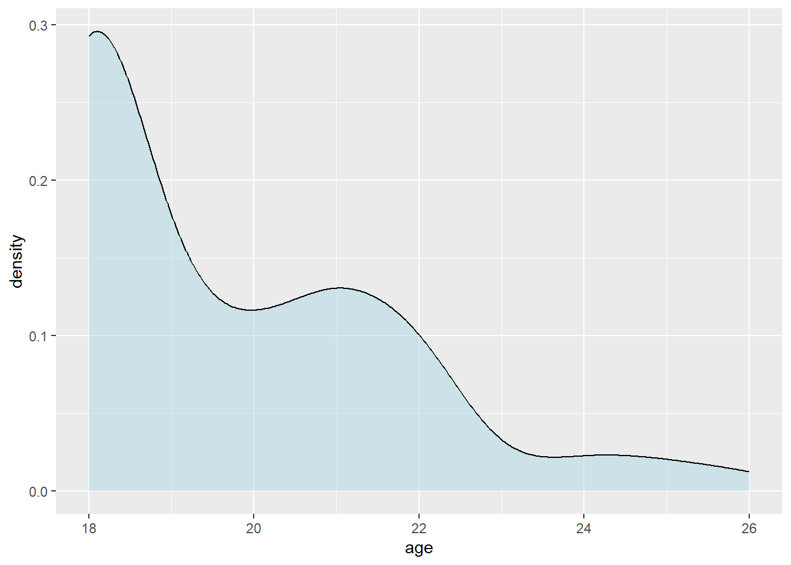
ggplot(data, aes(x = age)) +
geom_boxplot()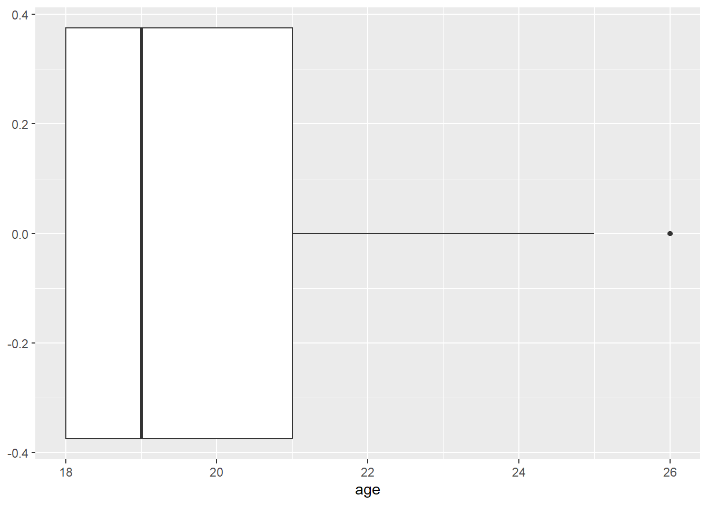
To compare the frequencies of discrete variables, you can use a bar plot.
ggplot(data, aes(x = additional_work)) +
geom_bar()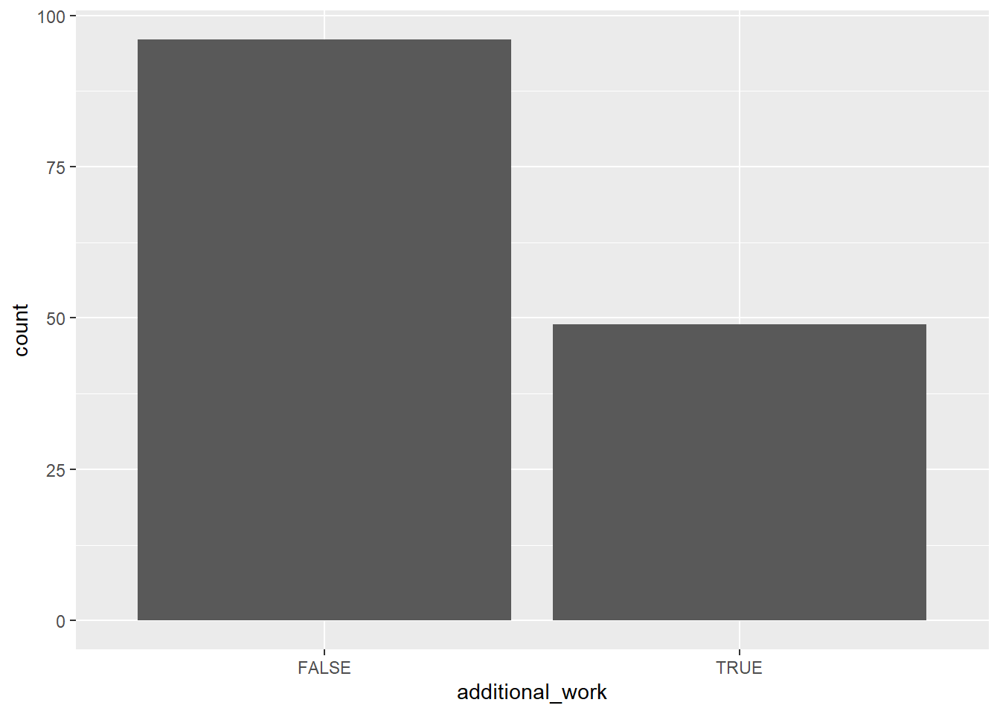
Bivariate plots
You can plot two continuous variables with a scatter plot. For example, you can plot the relationship between age and grade by specifying these variables as the x and y aesthetics:
ggplot(data, aes(x = age, y = grade)) +
geom_point()
Fitting a smooth curve or a linear regression line to the scatter plot can help you see the overall trend in the data.
ggplot(data, aes(x = age, y = grade)) +
geom_point() +
geom_smooth()
ggplot(data, aes(x = age, y = grade)) +
geom_point() +
# method = "lm" fits a linear model, se = FALSE removes the confidence interval
geom_smooth(method = "lm", se = FALSE)
If points overlap a lot, it might be useful to add some jitter, i.e. random noise to distribute the points, by using geom_jitter() instead of geom_point().
ggplot(data, aes(x = age, y = grade)) +
geom_jitter() +
geom_smooth(method = "lm", se = FALSE)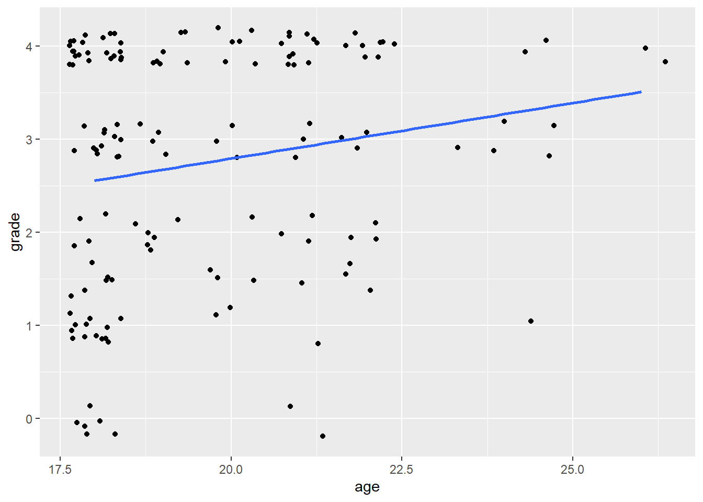
Categorical variables can be used to show the distribution of continuous variables by group. You can put a categorical variable on one of the axes, or use it on another aesthetic, such as the fill or color. Note that if a variable determines the fill, the color, and the shape of the points, that has to be specified inside an aes() function, while if the characteristic is pre-defined, then it goes outside the aes() function. Also note that if you specify aesthetics in the main ggplot() function, then they apply to all geoms, while if you specify them in a geom_...() function, they apply only to that geom.
ggplot(data, aes(x = grade, y = additional_work)) +
geom_boxplot()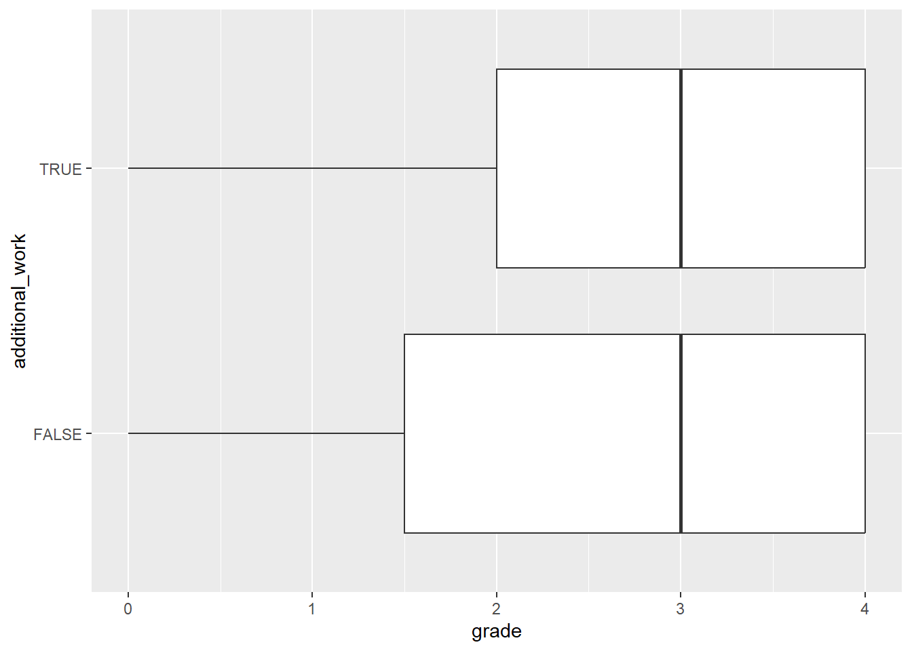
ggplot(data) +
geom_density(aes(x = grade, fill = additional_work), alpha = 0.5)
To plot two categorical variables, you can use a bar plot with an extra grouping argument. The next plot shows the number of students who do the class readings or not, and for each group we know whether they work take notes in class or not.
ggplot(data, aes(x = reading, fill = notes)) +
geom_bar()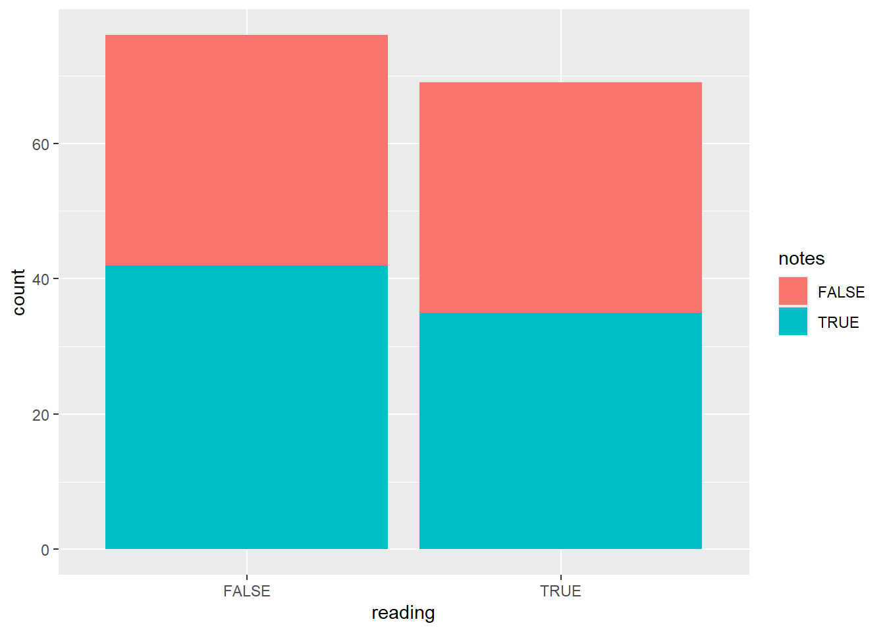
# to put the bars next to each other instead of on top, specify the position
ggplot(data, aes(x = reading, fill = notes)) +
geom_bar(position = "dodge")
Alternatively, you can use the count() function to count the number of observations in each possible combination of the two variables, and plot the results on a heatmap where lighter colors correspond to larger frequencies. To make the plot more readable, you can add the observed counts to the tiles with a geom_text() function, which requires an extra aesthetic label.
data |>
count(reading, notes) |>
ggplot(aes(x = reading, y = notes, fill = n)) +
geom_tile(color = "white") +
geom_text(aes(label = n), color = "white")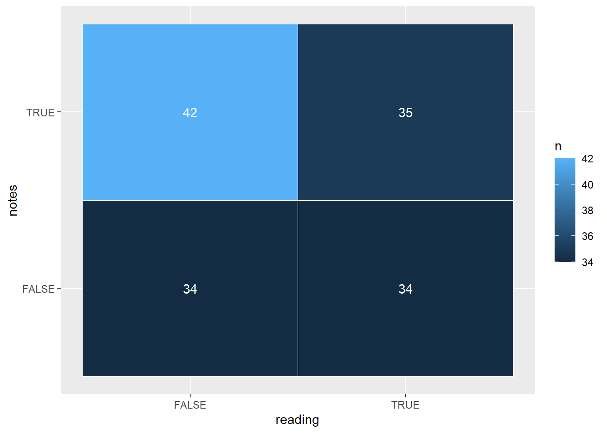
Customizing plot features
The two largest advantages of ggplot2 are the ability to layer multiple geoms on top of each other and the ability to extensively customize every plot by adding additional plot elements.
Plot labels
You can make the plot more informative by adding titles and axis labels.
ggplot(data, aes(x = grade, y = reading)) +
geom_boxplot() +
labs(title = "Grade distribution based on whether the student does the reading",
x = "Grade",
y = "Student does the reading?")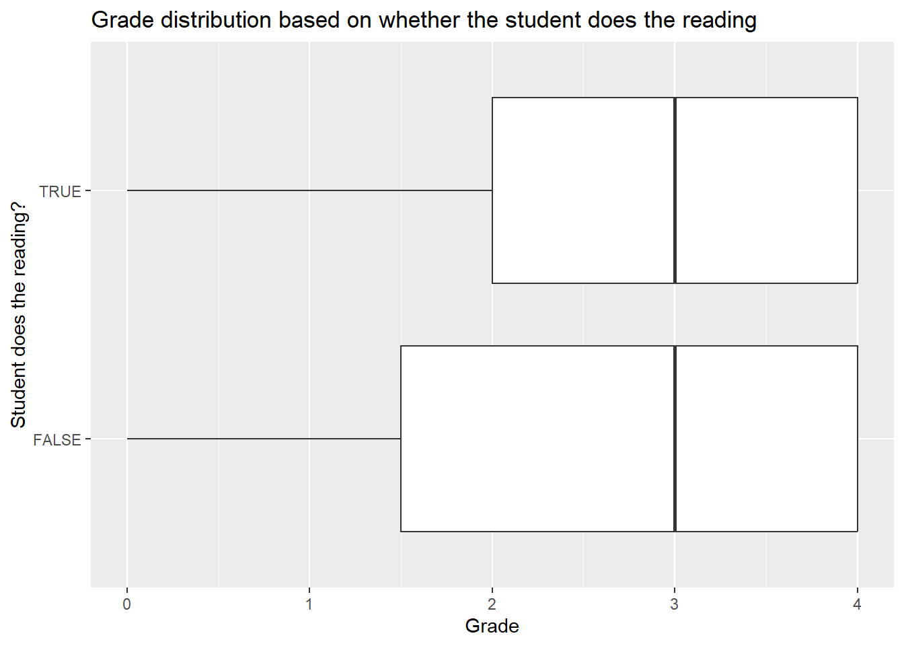
Themes
You can also change the appearance of the plot by changing the theme, the color palette, and the axis scales.
You can set the theme of the plot with one of the theme_...() functions, or set the theme for the entire R session with theme_set().
ggplot(data, aes(x = grade, y = reading)) +
geom_boxplot() +
labs(title = "Grade distribution based on whether the student does the reading",
x = "Grade",
y = "Student does the reading?") +
# set the theme of this plot to the pre-defined theme_light
theme_light()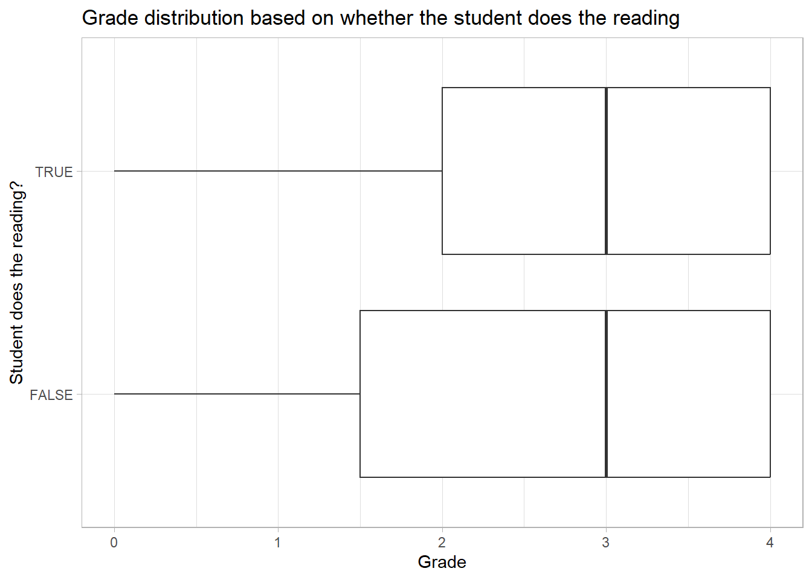
# set the theme of all future plots to the pre-defined theme_minimal
theme_set(theme_minimal())Axis breaks
You can adjust the axis breaks and labels with the scale_x_...() and scale_y_...() functions.
ggplot(data, aes(x = grade, y = reading)) +
geom_boxplot() +
labs(title = "Grade distribution based on whether the student does the reading",
x = "Grade",
y = "Student does the reading?") +
# define the axis tick positions on the continuous x axis
scale_x_continuous(breaks = seq(0, 4, 0.5)) +
# relabel the items on the discrete y axis
scale_y_discrete(breaks = c(FALSE, TRUE), labels = c("No", "Yes"))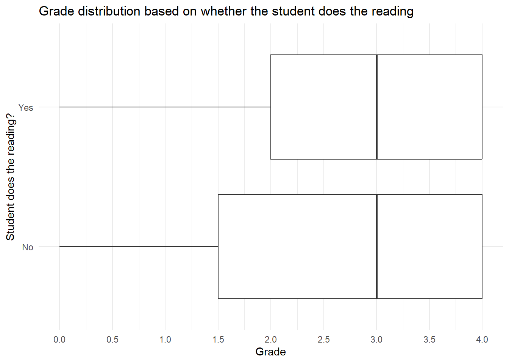
Scales
For any aesthetic you specify, you can override the default behavior by adding scale_... elements, referring to the relevant aesthetic. You can manually specify legend titles, color palettes, labels, etc.
ggplot(data, aes(x = reading, fill = notes)) +
geom_bar() +
labs(x = "Student does the reading?",
y = "Number of students",
fill = "Student takes notes?") +
# change the colors to a palette from the RColorBrewer package
scale_fill_brewer(palette = "Set1")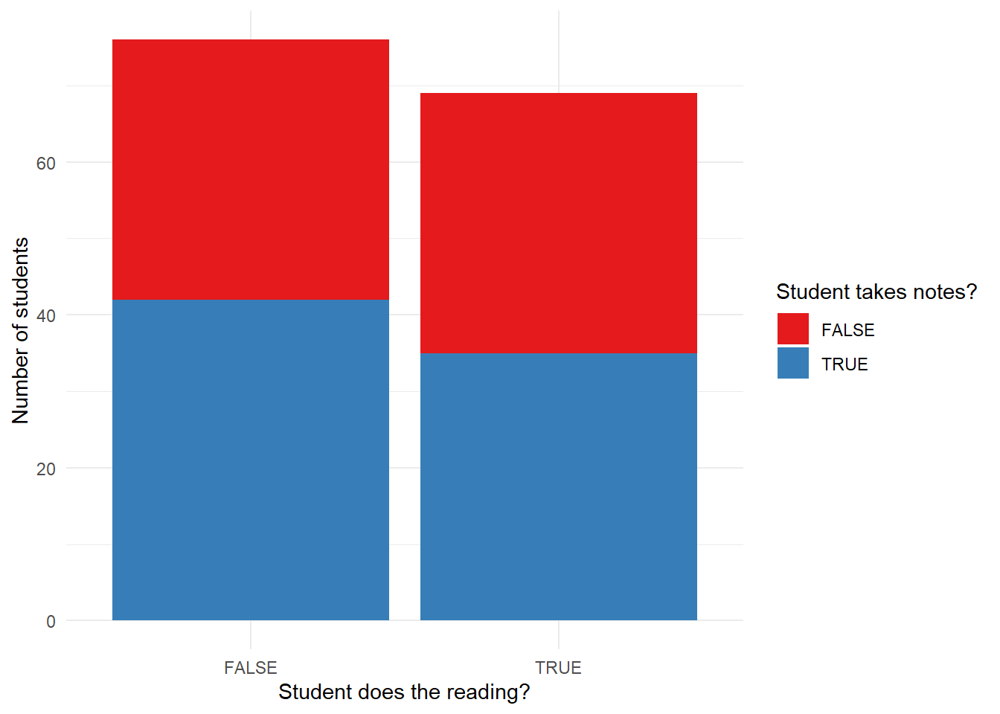
ggplot(data, aes(x = reading, fill = notes)) +
geom_bar() +
labs(x = "Student does the reading?",
y = "Number of students",
fill = "Student takes notes?") +
# specify the title and legend labels of the color scale
scale_fill_manual(
values = c("salmon", "lightblue"),
labels = c("No", "Yes")
)
ggplot(data, aes(x = age, y = grade, color = scholarship, shape = additional_work)) +
geom_jitter() +
labs(x = "Age",
y = "Grade") +
# Use a gradient color palette specifying the endpoints
scale_color_gradient("Scholarship (%)", low = "lightblue", high = "darkblue") +
# Manually specify the shapes per season
scale_shape_manual("Does additional work", values = c(16, 17))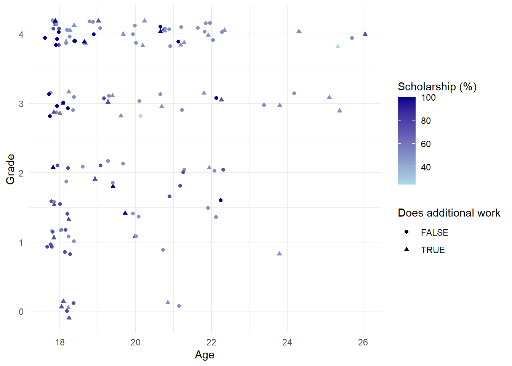
Coordinate systems
Similarly to scales, you can adjust the default behavior of the x and y axes as well (e.g. specify different axis limits, breaks, or labels), either by the scale_x_...()/scale_y_...() arguments or by changing the coordinate system with coord_...().
scale_x_...()/scale_y_...() is most useful for changing the axis breaks and labels, while coord_...() can e.g. flip the axes, adjust the aspect ratio (see coord_fixed()), and determine whether observations beyond the plot boundaries should be displayed.
Both scale and coord can adjust axis limits, with a subtle difference in their behavior.
ggplot(data, aes(x = age, y = grade)) +
geom_jitter() +
labs(x = "Age", y = "Grade") +
# Only plot observations with grade between 2-4
scale_y_continuous(limits = c(2, 4))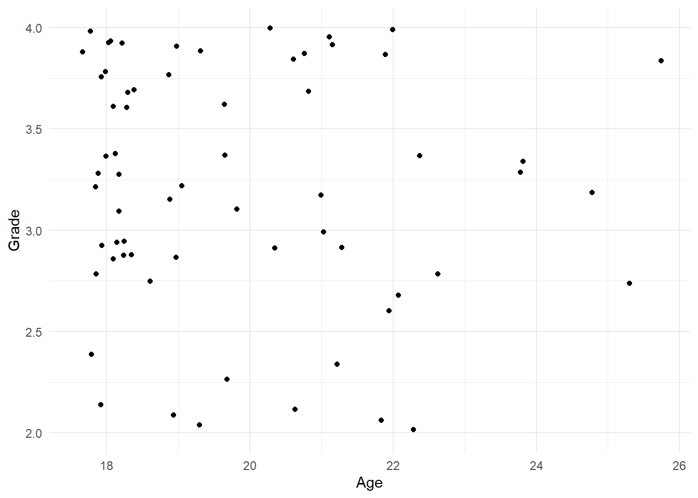
ggplot(data, aes(x = age, y = grade)) +
geom_jitter() +
labs(x = "Age", y = "Grade") +
# Limit the y-axis between 0 and 50, but don't filter out points
coord_cartesian(y = c(2, 4))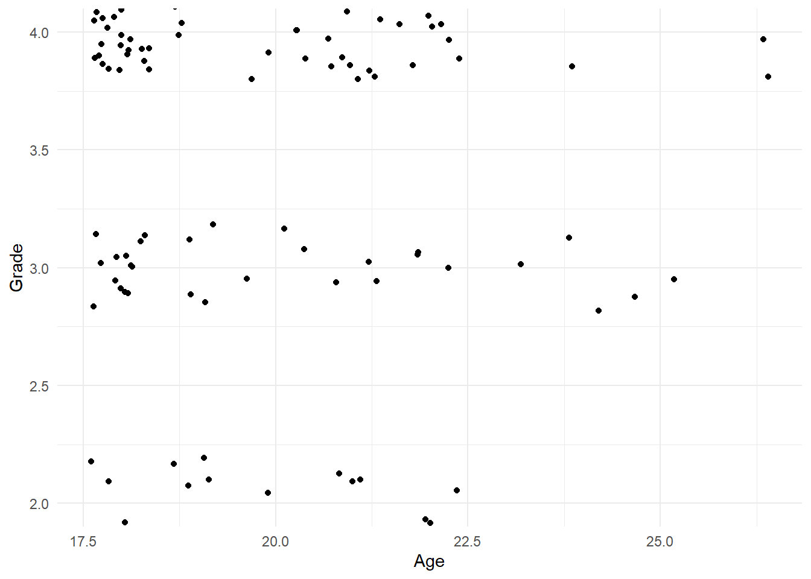
ggplot(data, aes(x = age, y = grade)) +
geom_jitter() +
labs(x = "Age", y = "Grade") +
# Limit the y-axis between 0 and 50, and let points show beyond the plot panel up to the plot margins
coord_cartesian(y = c(2, 4), clip = "off")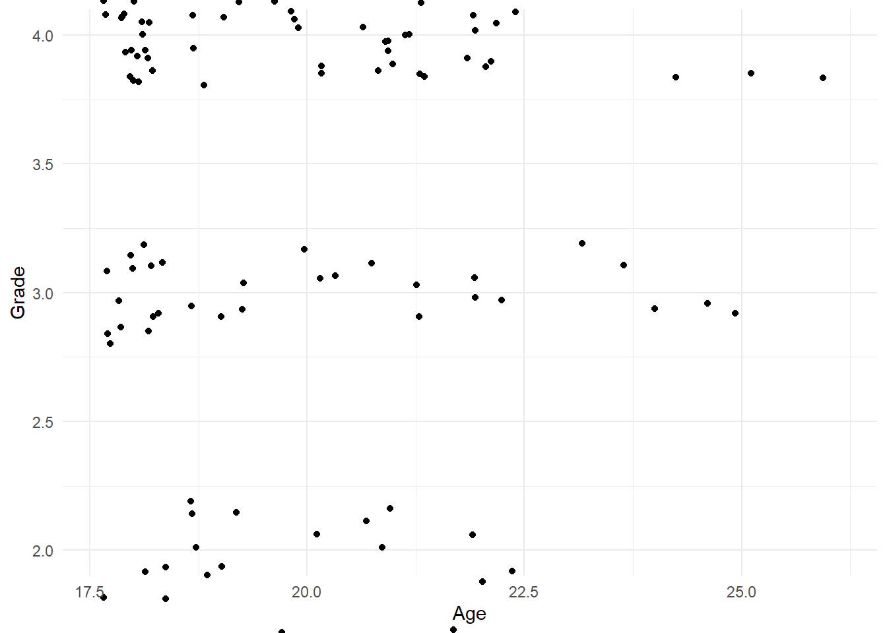
ggplot(data, aes(x = age, y = grade)) +
geom_jitter() +
labs(x = "Age", y = "Grade") +
# Reverse the x axis
scale_x_reverse()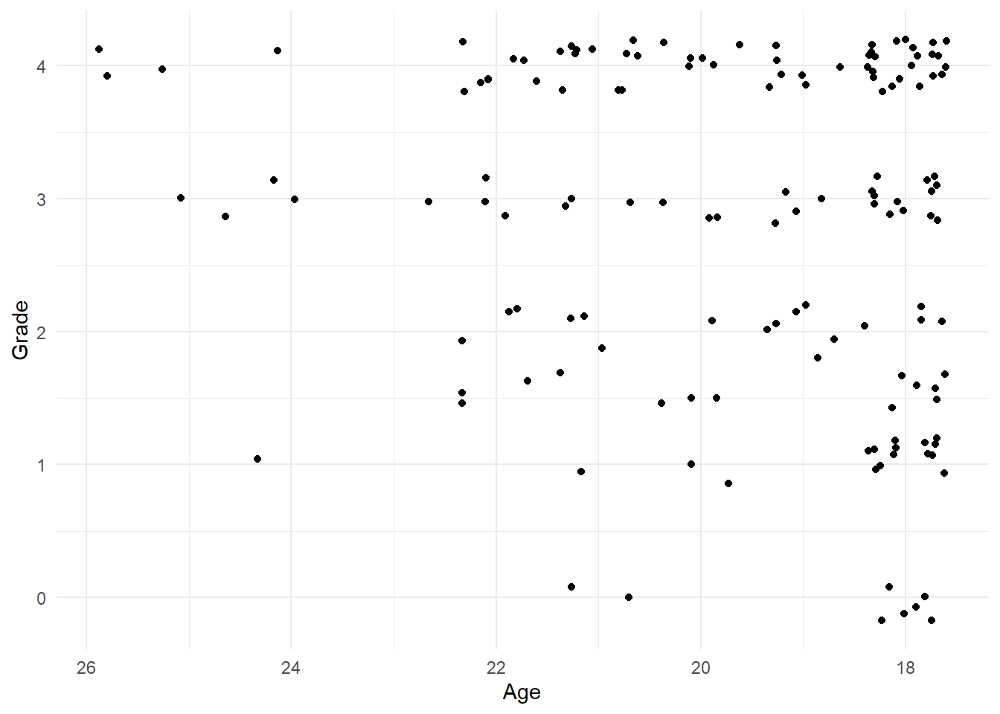
More advanced features
The R Graph Gallery provides a long list of common plot types, and so do Chapters 4 and 5 of Modern Data Visualization with R. Both resources group geoms by the type of variable(s) plotted.
You can use multiple datasets inside the same plot by specifying a new dataset (such as a filtered version of the original dataset) in the data argument of a geom_...() function. This feature can be useful to highlight particular observations, such as the location of the one student who doesn’t receive a scholarship on the age-grade scatterplot.
ggplot(data, aes(x = age, y = grade)) +
geom_point() +
geom_point(data = filter(data, is.na(scholarship)), color = "red") +
labs(caption = "The red point corresponds to the student without a scholarship")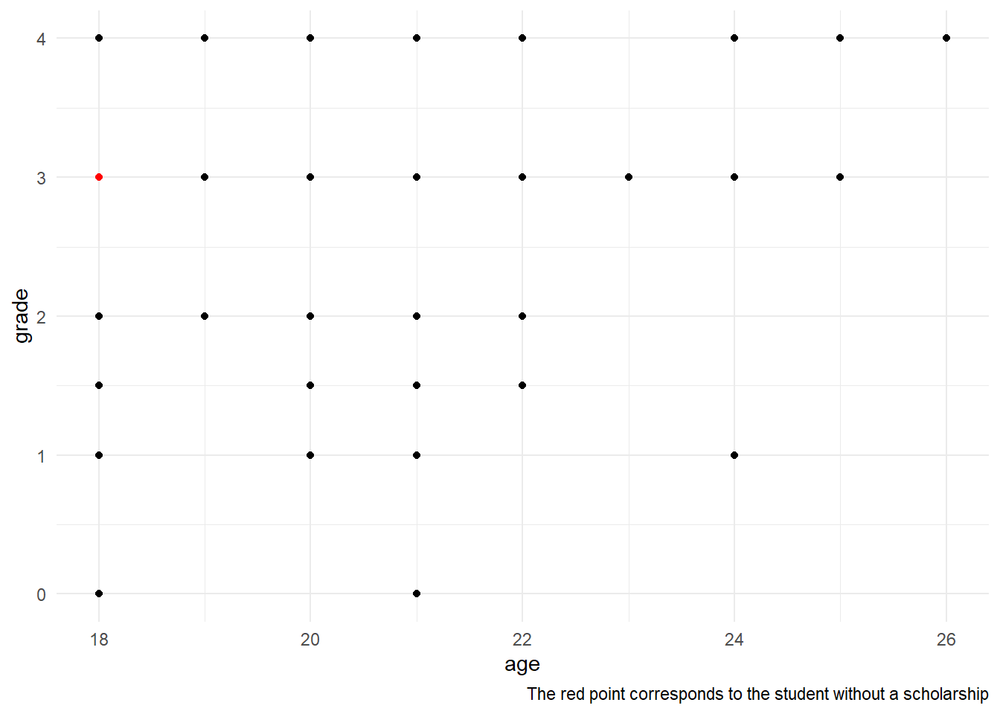
Multiple plots
Often you would like to present multiple plots side-by-side: maybe show how the relationship between variables differs depending on some groupings of observations (and putting all observations on a single plot looks too cluttered), or compare how different outcome variables react to changes in an explanatory variable. The two main ways to nicely arrange plots are
- creating a single plot with multiple panels, known as facets;
- creating multiple independent plots, and arranging them into one figure afterwards.
Using facets
By specifying a grouping variable along which to facet, you can create a separate plot for each value of your facet variable. You can create faceted plots by adding facet_wrap() to your ggplot object, and specify the faceting variable with a tilde (~). You can also specify additional arguments such as whether to allow the axis limits to vary between panels. Only use variables with relatively few unique values as your facet dimension, otherwise R will attempt to create far too many plots, which takes a long time and might even crash your R session.
ggplot(data, aes(x = age)) +
geom_histogram(binwidth = 1) +
# Create separate plots based on whether the student does the reading
facet_wrap(~reading)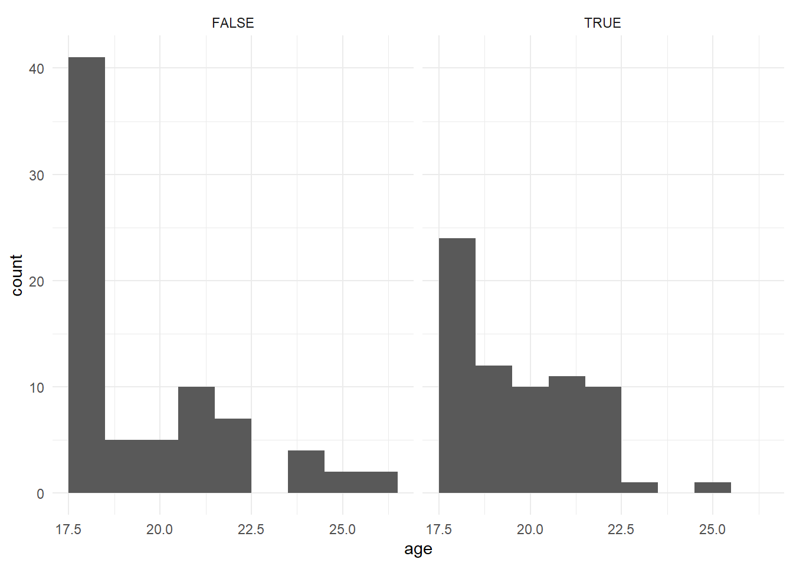
ggplot(data, aes(x = age)) +
geom_histogram(binwidth = 1) +
# Create separate plots per season, arrange all plots in one column, let all scales vary
facet_wrap(~reading, ncol = 1, scales = "free")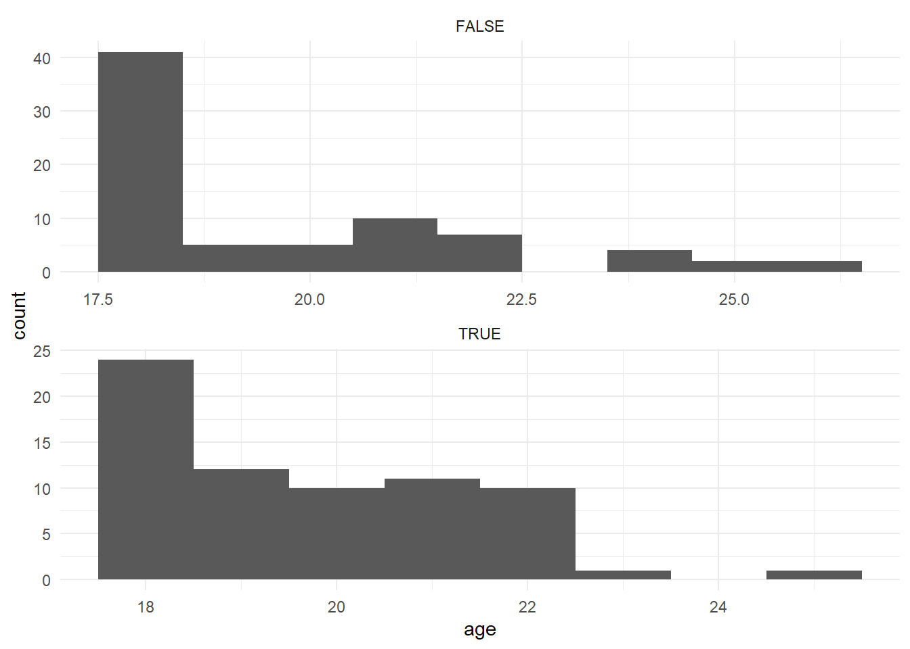
If you would like to group your data based on two variables, you can use facet_grid(), separating your two variables with a tilde. In this example, let’s rename the variable values to make it clear which group each plot represents.
data |>
mutate(reading = ifelse(reading, "Reading", "No reading"),
notes = ifelse(notes, "Notes", "No notes")) |>
ggplot(aes(x = age)) +
geom_histogram(binwidth = 1) +
# Create separate plots based on whether the student does the reading and takes notes
facet_grid(~reading~notes)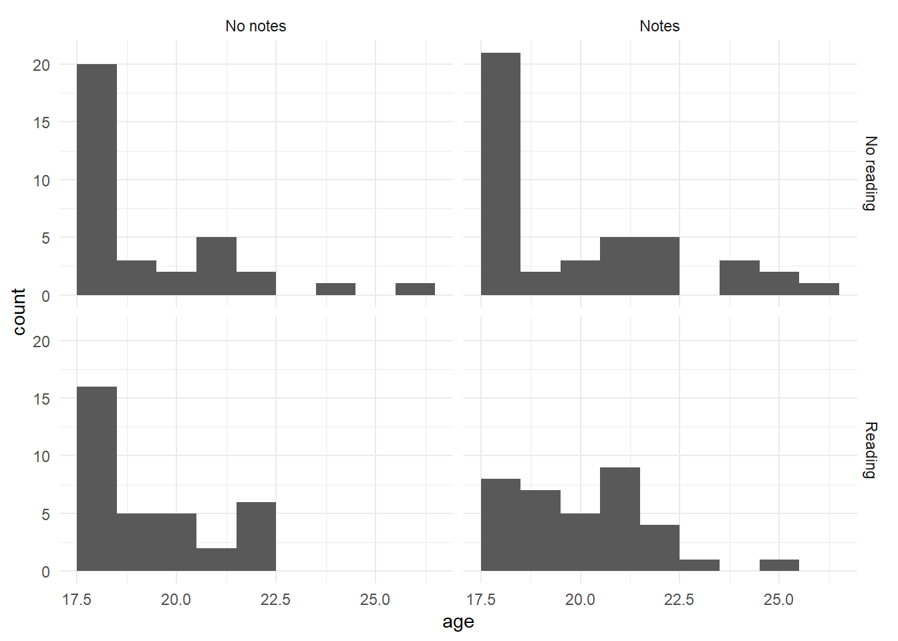
Combining independent plots with patchwork
In order to nicely arrange separate plots and same them as a single file, you can use the patchwork packages. First you need to save each of your plots into an R object (here p1, p2, p3), then use + signs to combine the plots horizontally, and / signs to combine them vertically. You can make these layouts as complex as you want to by using parentheses to group rows. Alternatively, you can specify custom layout options, including additional options such as whether to repeat or collect legends, by adding a plot_layout() function to the plot objects.
# install.packages("patchwork")
library(patchwork)
# Create and save plots of grades per reading, notetakings, and listening
p1 <- ggplot(data, aes(x = grade, fill = reading)) +
geom_density(alpha = 0.5) +
# place the legend inside the plot at the defined coordinates (0-1 scale)
theme(legend.position = c(0.25, 0.85))
p2 <- ggplot(data, aes(x = grade, fill = notes)) +
geom_density(alpha = 0.5) +
theme(legend.position = c(0.25, 0.85))
p3 <- ggplot(data, aes(x = grade, fill = listening)) +
geom_density(alpha = 0.5) +
theme(legend.position = c(0.25, 0.85))
# Combine the plots horizontally
p1 + p2 + p3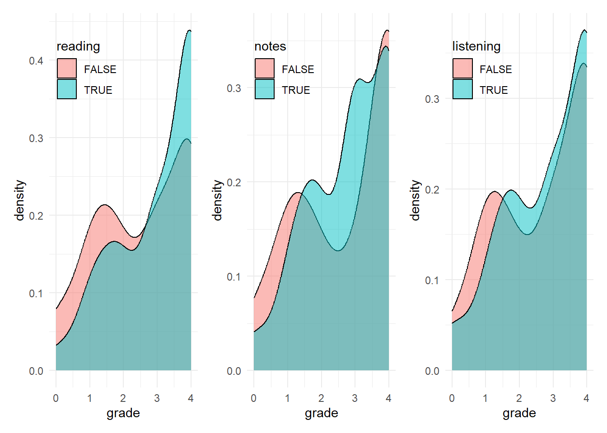
# Combine temp and ozone vertically
p1 / p2 / p3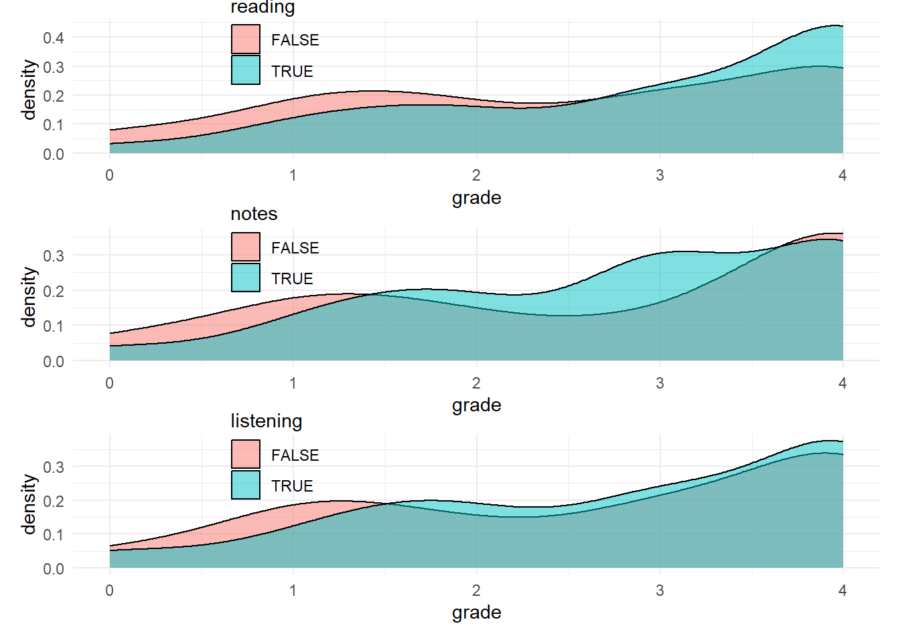
# Combine the plots vertically with plot_layout
p1 + p2 + p3 + plot_layout(ncol = 1)Saving plots
You can save ggplot objects to use outside of the R environment with the ggsave function. You can specify an existing ggplot object as the first argument, but by default ggsave() saves the last plot displayed in your Plots panel. You always need to specify the file path of the saved plot, including the preferred file format (e.g. .png, .jpg, .pdf). You can adjust the plot size with the scale argument or by specifying the height and width in your preferred units (the default units are inches).
ggplot(data, aes(x = grade, y = age)) +
geom_point()
# Save last plot
ggsave("figures/plot1.png", scale = 1.5)
p <- ggplot(data, aes(x = grade, y = age)) +
geom_point()
# Save plot saved to the Environment
ggsave("figures/plot2.png", p, height = 10, width = 15, units = "cm")